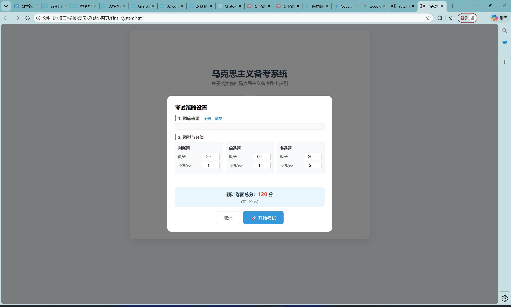
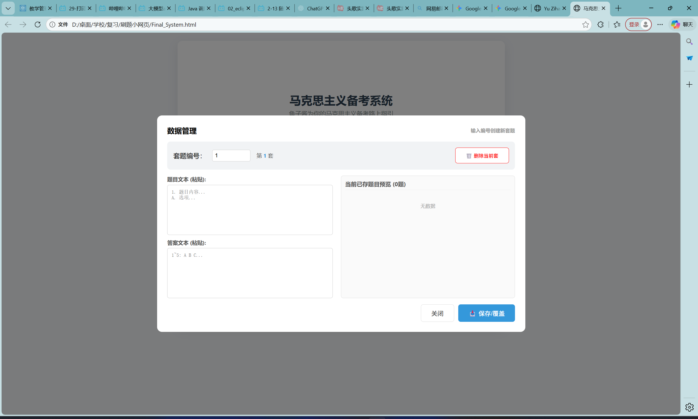
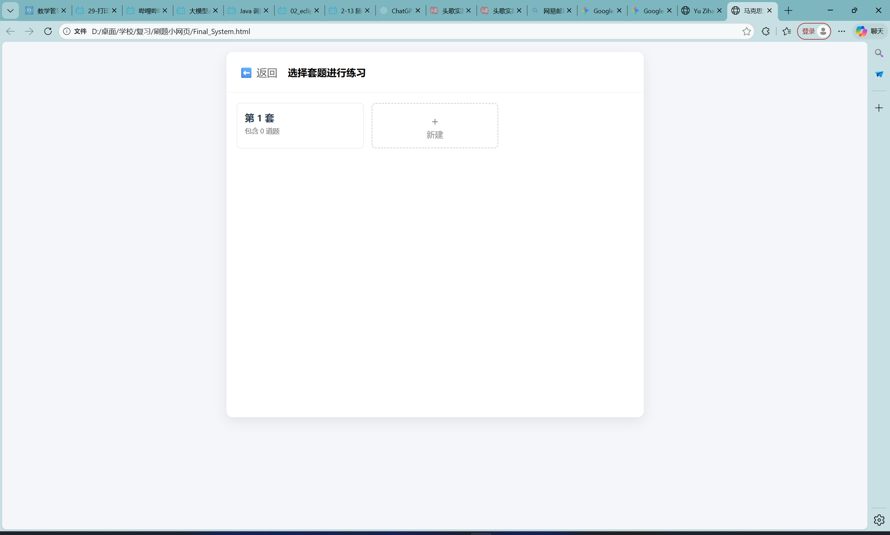

马原考试系统
为马可思主义原理课程开发的在线考核平台。系统包含题库管理、随机抽题、在线答题及自动评分功能。以下展示了系统的核心功能模块。
1. 随机抽题界面
2. 试题录入界面
3. 学生练习界面
⚡ 前端技术栈：纯粹的 HTML5 开发
基于 HTML5 + CSS3 + JavaScript 原生构建，拒绝臃肿依赖。这是一个真正无需联网、单文件即开即用的全能刷题神器。无论身处何地，只需一个浏览器即可开启高效备考，实现了极致的轻量化与便捷性。
💾 数据安全：本地存储与文件交互
利用浏览器的 LocalStorage (本地存储) 技术，实时自动保存做题进度，意外关闭也不怕。结合强大的 File API，支持 JSON 格式的无限题库一键导入与数据永久备份导出，让数据完全掌握在用户自己手中。
🎯 学习闭环：智能错题攻坚
系统完美集成了“自定义规则抽题”、“全真模拟打分”与“智能错题本”功能。它能自动捕捉并记录用户的薄弱知识点，形成高效的错题攻坚闭环，帮助用户在反复练习中查漏补缺。